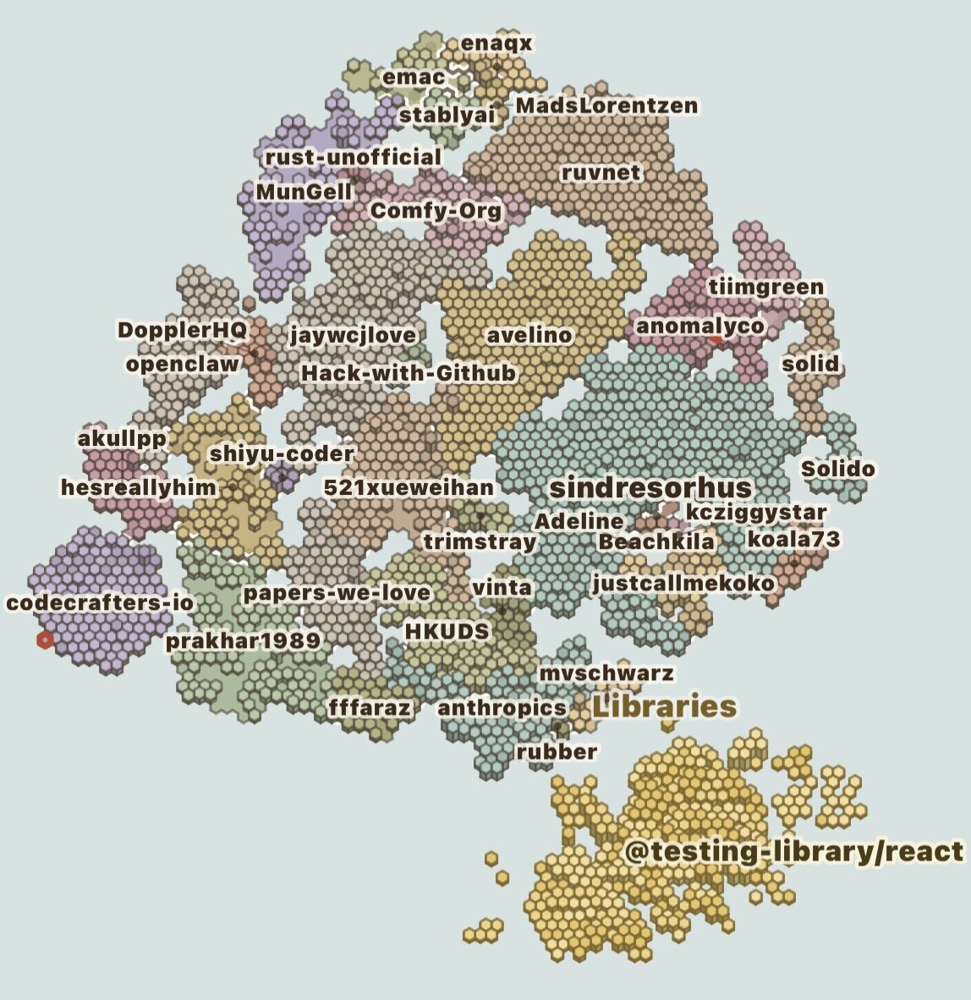
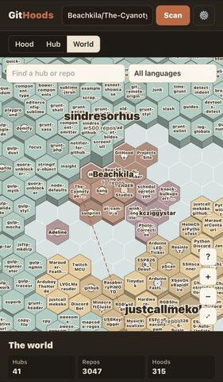
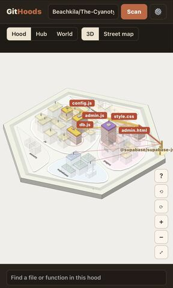

GitHoods
GitHub repos rendered as generative towns on a shared world map

Has releasesthree.jsGitHub APICloudflare Workersgenerative map
4 updates from Oct 2026 to Oct 2026
Mediums
Code spectrum
Hardware 0, System / network 3, Data / tools 7, Web / platform 9
Timeline
First site
GitHoods turns a GitHub repository into a town. Files and folders become buildings and districts, and the size and shape of the town come from measurements of the repo. The first version of the site had a page of starter towns, a form for requesting a scan of a repo, and a relay that passes those requests to a private bot.
The bot runs as a GitHub Action in a separate private repo. It scans the requested repo through GitHub's public API, builds the town, and commits it to the public site, so every scanned repo is added to one shared map that anyone can browse.
Public release
The site has three views: Hood, Hub and World. A Hood is a single repo, drawn as a 3D town on a hex tile that can be rotated and zoomed. A Hub is an owner's account and holds all of their Hoods. The World view is one continent of hex territories, one per Hub, placed oldest first from the center outward. Existing Hubs keep their place and grow as new repos are scanned.
Inside a Hood, files that import each other are joined by power lines. Selecting a file lights its connections, shows the names of the connected files and fades the unrelated buildings. Shared libraries sit on their own island on the World map, with tile heights set by how many Hoods use each one. A guided tour walks through the main files of a Hood.
Searches made on the site are queued for scanning automatically through a Cloudflare Worker, so the map grows as people use it. Built with three.js, GitHub's public API, GitHub Actions and a Cloudflare Worker.
World map
The World view at 41 Hubs, 3,047 repos and 315 scanned Hoods. Each Hub is a block of hex tiles in one color, with its repos as named tiles. The map can be searched by Hub or repo name and filtered by language.

World map
Hood view: The Cyanotype Network
The Cyanotype Network repo drawn as a Hood in the 3D view. Its folders (js, pages, supabase and assets) are districts around the civic center, and each file is a building. Selecting a file lights the wires to the files it connects to, here config.js, admin.js, db.js, style.css and admin.html, and to the @supabase/supabase-js library gate on the edge of the tile. The Hood can also be shown as a street map and searched by file or function name.

The Cyanotype Network hood